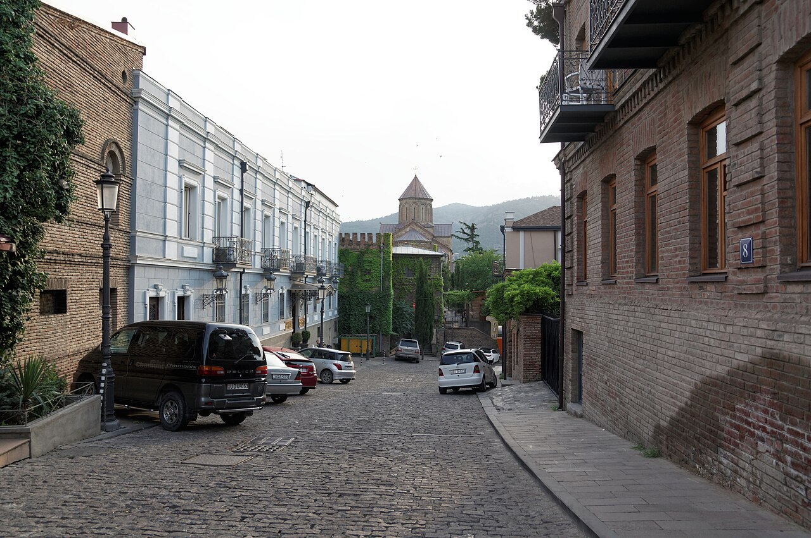
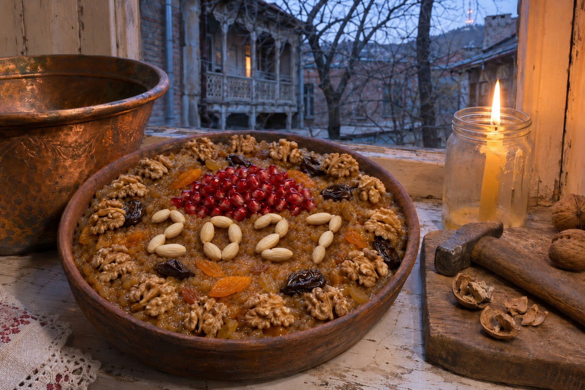

Здешние

Орех бейте один раз, по шву, вот сюда. Два раза бьют, когда злятся, и тогда ядро летит в крошку, а мне нужны половинки, сверху класть. Молоток мужа, доска тоже его. Он на этой доске отбивал мясо и говорил, что вся моя кухня держится на его доске. Я с ним не спорила. Теперь бы и поспорила, да не с кем.
Это анушапур. По-армянски — «сладкий суп», хотя какой он суп, это каша. Пшеницу я замочила вчера с вечера, утром варила, потом положила сухофрукты, теперь он стынет на окне. Видите, уже не дрожит, когда тронешь кастрюлю. Сегодня пятое января, сочельник. Мы его едим до Рождества и на Рождество, и раздаём соседям. Он постный, в нём ни масла, ни молока: неделю перед Рождеством у нас пост. Кто сейчас постится? Я и ещё Сирануш с третьего этажа, но Сирануш хитрит.
Свечу я принесла из Эчмиадзина, вот она, в банке, чтобы не задуло. Так полагается: в сочельник взять в церкви огонь и донести до дома. От церкви до моей двери двести шагов, а я их иду, как другие в Мцхету. Эчмиадзин — наша церковь, тут, у площади, вы мимо ходили. Её недавно чинили, деньги дали армяне из Аргентины. Где Аргентина и где Авлабар? А вот дали. Значит, кто-то там тоже отсюда.
Мне восемьдесят два, и в этом дворе я с рождения. Вон тот балкон на втором этаже, с синими столбиками, был наш. Потом мы с мужем получили эту квартиру, через двор, и я двадцать лет смотрела на свой старый балкон, как на родственника, которого нельзя навестить без повода.
Двор у нас был — сорок человек. Армяне, грузины, семья езидов, евреи Элиашвили, тётя Клава, русская, вдова лётчика. Летом спали на балконах, все друг друга слышали — кто храпит, кто плачет. Если кто-то варил варенье, весь двор знал, какое. Дома мы говорили по-армянски, во дворе по-грузински, в магазине по-русски, а ругались на всех трёх сразу, так быстрее доходит.
Вы говорите — диаспора. Ко мне приходил мальчик из Еревана, с микрофоном, тоже говорил: армянская диаспора Грузии. Я ему сказала: сынок, диаспора — это когда уехали. А мы не уезжали. Мой прадед тут родился, и его отец тут родился, а дальше я не знаю, бумаги не сохранились, но, наверное, тоже тут. Это вы диаспора. Вы приехали — вы и диаспора. А я — Авлабар.
Не обижайтесь. Мальчик тоже не обиделся, он записал.
Прадеда звали Акоп. Он держал на Майдане медную лавку: котлы, кувшины, тазы для варенья. Таз, в котором я сегодня мыла курагу, — его, видите клеймо? «Акоп» армянскими буквами и тысяча девятьсот второй год. Он умер в двенадцатом году, бабушке было десять. Похоронили его на Ходживанке. Это было наше армянское кладбище, большое, как город, там, на холме. Бабушка говорила — девяносто тысяч могил. Она каждое воскресенье ходила туда с матерью, носила в бутылке воду для цветов.
Потом пришли тридцатые. Я этого не видела, мне бабушка рассказывала, всегда одинаково, одними и теми же словами, как молитву. Сначала сломали церковь. Потом стали выдирать камни. Грузили на машины стоймя, как стекло возят. Бабушка пошла искать отцовскую плиту, чтобы хоть её забрать. Ей сказали: гражданка, не мешайте работать. Она стояла у забора, смотрела, как уезжают машины, и пыталась узнать отцовский камень по краю. Не узнала. Камни пошли на стройки — на лестницы, на тротуары, куда придётся. Кости остались в земле. А сверху сделали парк.
Парк дружбы. Так назвали, я не придумала.
Я родилась в войну. Когда я была маленькая, этот парк был самое весёлое место на Авлабаре: качели, лодочки, мороженое в вафлях, по воскресеньям оркестр. Все дети туда бегали. Меня бабушка не пускала. Ничего не объясняла, просто говорила: «Туда — нет». Мама пожимала плечами, мама была комсомолка.
Лет в восемь я сбежала туда с соседскими мальчишками. Каталась на лодочке, высоко-высоко, так, что видно было Метехи и реку. Пришла домой счастливая, с липкими от мороженого руками. Бабушка посмотрела на мои руки и спросила только:
— Высоко было?
Я сказала: высоко. Она сказала: «Ну и хорошо. Он любил, когда высоко». И всё — ни ремня, ни крика. Про кого это она, я поняла только лет через десять. С тех пор я в тот парк не ходила. Не потому что нельзя, а потому что неловко качаться у человека на голове.
Колите, колите. Половинки сюда, на тарелку, а крошки в кастрюлю, крошки тоже еда.
Бабушка до самой смерти на Рождество отливала ложку анушапура в чашечку и вечером уходила. Куда — все знали, никто не спрашивал. У ограды парка росла старая шелковица, бабушка ставила чашку под неё и шла домой. Утром чашка стояла пустая. Бабушка говорила: «Съел». Мама говорила: «Собаки». Я думаю, правы обе.
Бабушка умерла в семьдесят первом, и чашку стала носить я. Сначала под ту же шелковицу. Потом всё поменялось: парк закрыли, шелковицу срубили, на холме много лет шла стройка. Теперь там стоит большой собор — вон его крест, с моего балкона видно, вечером горит золотом. Красиво. Я смотрю. Бабушка его не застала, и, может быть, это хорошо.
Теперь я ношу чашку в пантеон. Это маленький кусочек, который от Ходживанка остался, там лежат наши знаменитые: Туманян, Раффи, художники, артисты. Кого смогли, тех камни туда перенесли. Моего Акопа там нет, он был не знаменитый, он котлы продавал. Но я ставлю чашку у Туманяна. Туманян был добрый человек, он поделится. Он про таких, как мой прадед, всю жизнь писал.
Отдохните, дальше я сама, тут немного осталось.
В восемнадцатом году — вы, может, читали — на Бараташвили, на спуске, перекладывали тротуар. Подняли старые плиты, а на обратной стороне буквы. Армянские. Надгробия с Ходживанка. Люди ходили по ним восемьдесят лет и не знали. Часть камней отвезли в пантеон, внучка меня туда возила смотреть. Я искала «Акоп». Не нашла. Был там один камень, разбитый, на нём можно прочитать только «…коп», а дальше скол. Внучка говорит: «Бебо, это мог быть кто угодно, Агоп, Якоп». Я говорю: знаю. Но по Бараташвили я теперь хожу с краю. Мало ли кто там ещё лежит буквами вниз.
Так, снимаю крышку. Смотрите, загустел. Пшеница лопнула, вся, как надо. Горячий он жидкий, течёт, и думаешь, что не получилось. Остынет — встанет. Тут только терпение.
Про восемьдесят девятый год я вам тоже скажу, раз вы пишете. Недалеко отсюда была церковь Кармир Аветаран — Красное Евангелие. Её так звали, потому что там хранили старое Евангелие в красном переплёте. Самая высокая армянская церковь в Тбилиси, сорок метров. Купол видно было отовсюду, и с того берега тоже. Она давно стояла закрытая, в трещинах, но стояла.
В апреле восемьдесят девятого купол упал. В том же апреле, через несколько дней после Руставели, когда у всего города было своё горе и все ходили чёрные. Я была на кухне, утро. Звук был такой, будто во дворе с грузовика высыпали камни. Мы выбежали, над крышами стояла пыль. Потом во дворе спорили неделю. Одни говорили — сам упал: трещины, старость, где-то трясло. Другие говорили — помогли. Я не спорила. Я не видела, я слышала, а что слышала, то и говорю.
Муж тогда сказал: «Сейчас не время про купол». У Наны, нашей соседки, племянник был на Руставели в ту ночь, наглотался газа, его еле откачали. Муж был прав. Я и молчала.
Несколько лет назад, после воскресной службы, мы пошли из Эчмиадзина к Кармир Аветарану со свечами. Нас было немного. Встали у стены, которая осталась, помолились. Никто не мешал. Грузины смотрели из окон, одна женщина вынесла мне табуретку, потому что я стояла с палкой. Так я на её табуретке и молилась. Вот вам и вся политика.
Девяностые я не люблю вспоминать. Не из-за того, что было, а из-за того, кто уехал. Свет давали на два часа, за хлебом стояли с ночи, во дворе жгли костры — на них варили, на них грели воду. И каждый месяц кто-нибудь уезжал. Элиашвили — в Израиль, тётя Клава — к дочери в Воронеж, Карапетяны с третьего этажа — в Ереван, а потом из Еревана в Америку. Мой сын, Рубен, уехал в Краснодар в девяносто третьем и там живёт. Звонит по воскресеньям: «Мама, переезжай, у нас тепло». Я говорю: «У меня тоже тепло, у меня Нана». Он говорит: «Нана — это не отопление». Он прав. Но я не поеду.
Сейчас во дворе, кто живёт по-настоящему, нас семь человек. Остальное — гостиница. Вон те окна, где жили тётя Клава и Карапетяны. Купил парень из Батуми, хороший, вежливый, сделал ремонт, повесил табличку по-английски. Теперь там каждый день новые люди с чемоданами. Колёсики по нашим ступенькам — тр-р-р, тр-р-р, с утра до ночи. Поляки, израильтяне, китайцы, ваши тоже. Фотографируют наш балкон и моё бельё. Я сначала злилась, потом стала вешать красивое.
Одна девушка, француженка, спросила меня через телефон: «Вы здесь давно?» Я сказала: «Двести лет». Телефон перевёл, она засмеялась. А я не шутила.
Дочка моя вышла за грузина, за Гию, ещё в восемьдесят пятом. Тогда никто не шептался, у нас во дворе через одного так. Внучка Мариам по-грузински говорит лучше всех нас, а армянский учит теперь по приложению в телефоне. Приложение её хвалит, я ругаю. Так и учится, между нами двумя.
Нана — та самая соседка, через балкон. Сорок лет мы через этот балкон передаём друг другу соль, спички и новости. Её Рождество завтра, седьмого, а наше — сегодня ночью. Мы на день раньше. Нана смеётся: «Вы, армяне, всегда торопитесь». Я ей говорю: мы не торопимся, мы просто раньше начинаем ждать. Сегодня я несу ей анушапур, завтра она мне — что у неё будет, а у неё всегда гозинаки остаются с Нового года. А седьмого по двору пойдёт Алило, дети с песней и с мешком, собирают сладкое. Я им даю, что от анушапура осталось, — изюм, курагу. Они кривятся, им шоколад нужен. Ничего, берут.
У вас ведь тоже седьмого? Или вы, писатели, вообще не празднуете? Тогда завтра идите к Нане, она вас накормит, а потом опять ко мне, у меня ещё останется.
Ну, всё. Перекладываем в большую миску. Ложкой, ложкой, не выливайте — он тяжёлый. Сверху орехи, ваши половинки, по кругу. В середину гранат. Теперь миндаль. Бабушка всегда выкладывала миндалём наступающий год, и я выкладываю. Два. Ноль. Два. Последнюю цифру кладите вы — семёрку.
Нет, это у вас единица с козырьком получилась. Вот так, хвост длиннее. Ничего, кривая — тоже семёрка. Через год положите ровнее, значит, через год придёте. Так здешними и становятся — по одной цифре в год.
Это Нане. Это завтра после службы — к Туманяну. А это вам. Ешьте холодным, горячий он ещё не настоящий.

Анушапур — армянская рождественская каша
На восемь порций
Что нужно
- очищенная пшеница (коркот или цельное зерно без оболочки) — 250 г;
- вода — 2,5 л;
- сахар — 150 г (или мёд — 200 г);
- курага — 150 г;
- светлый изюм — 100 г;
- чернослив без косточек — 100 г;
- грецкие орехи — 100 г (лучше половинками);
- миндаль — 50 г;
- гранат — 1 небольшой;
- молотая корица — щепотка, по желанию;
- розовая вода — 1 ст. л., по желанию.
Как делать
1. Пшеницу промойте в нескольких водах и замочите на ночь в холодной воде. Если взяли коркот (дроблёную), достаточно 2–3 часов.
2. Слейте воду, залейте пшеницу 2,5 л свежей воды и доведите до кипения. Снимите пену, убавьте огонь до самого слабого и варите под приоткрытой крышкой 1,5–2 часа, время от времени помешивая по дну, пока зёрна не лопнут, а отвар не станет густым и мутным. Если загустеет слишком рано, подлейте кипятка.
3. Курагу и чернослив нарежьте полосками, изюм оставьте целым. Промойте сухофрукты и залейте горячей водой на 15 минут, затем откиньте на сито.
4. Всыпьте в кашу сахар (или добавьте мёд), перемешайте до растворения и положите сухофрукты. Варите ещё 10–15 минут, помешивая, чтобы не пригорело. Если любите, добавьте корицу и розовую воду в самом конце.
5. Снимите с огня. Горячий анушапур жидкий, как суп, — так и должно быть. Переложите его в широкую миску и дайте остыть при комнатной температуре 2–3 часа, а затем уберите в прохладное место: он загустеет и станет плотным.
6. Миндаль залейте кипятком на 5 минут и снимите кожицу.
7. Перед подачей выложите сверху по кругу половинки грецких орехов, в середину — зёрна граната, а миндалём — цифры наступающего года. Подавайте холодным.
Анушапур нельзя доделать горячим: каким он должен быть, видно только после того, как он остынет.
Тбилиси, ноябрь 2026